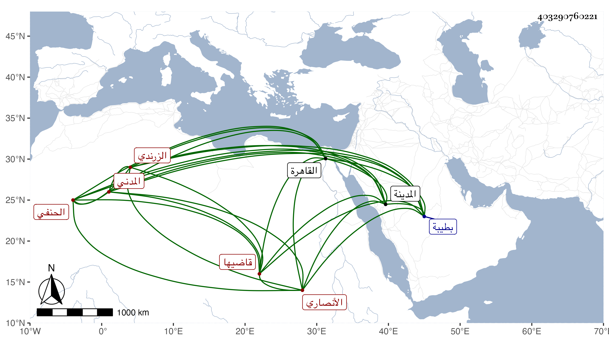

0902Sakhawi.DawLamic.ITO20230111-ara1.EIS1600.403290760221
Biography ID: 403290760221
759
علي بن سعيد بن محمد بن محمد بن عبد الوهاب بن علي بن يوسف نور الدين بن الجمال بن فتح الدين أبي الفتح الأنصاري الزرندي المدني قاضيها الحنفي الماضي أبوه وعمه . ولد بعد الأربعين وثمانمائة بطيبة ونشأ بها فحفظ القرآن وأربعي النووي والشاطبية وألفية الحديث والكنز وأصول الشاشي والمنار ومختصر التفتازاني في علم الكلام وألفية ابن مالك وتوضيحها لابن هشام والشافية في الصرف وايساغوجي في المنطق وعرض على جماعة وقرأ على أبيه في الفقه وغيره وعلى حميد الدين العجمي في الفقه فقط وعلى الشهاب الأبشيطي في العربية والمنطق وكذا على السيد شيخ الباسطية المدنية وابن يونس ومحمد بن مبارك فيهما وفي الصرف وعلى السيد مقيل الدين الأيجي في العربية وكذا على ملا محمد سلطان وتلا على الشمس الششتري وعمر النجار القرآن بل تلاه لنافع وأبي عمرو على السيد الطباطبي ثم جمع عليه للسبع إلى براءة وسمع على أبوي الفرج المراغي والكازروني بقراءته وقراءة غيره بل قرأ بالمدينة أيضا على الأمين الأقصرائي وكذا سمع علي فيها ، واستقر في القضاء والحسبة بعد أبيه ثم انفصل عن الحسبة يسيرا بقريبهم علي بن يوسف الآتي ، وحلق في المسجد النبوي وقرأ عليه أخوه البخاري ، وهو ساكن من بيت قضاء ووجاهة . ودخل القاهرة مطلوبا في سنة سبع وتسعين ولم يلبث أن عاد في البحر بورك فيه .
